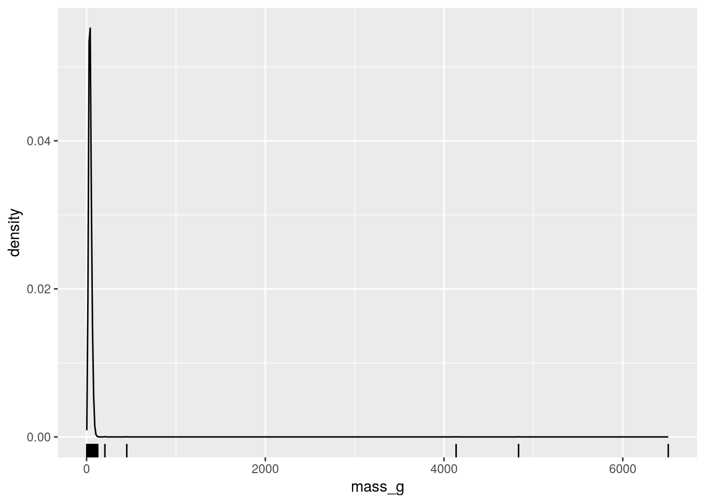
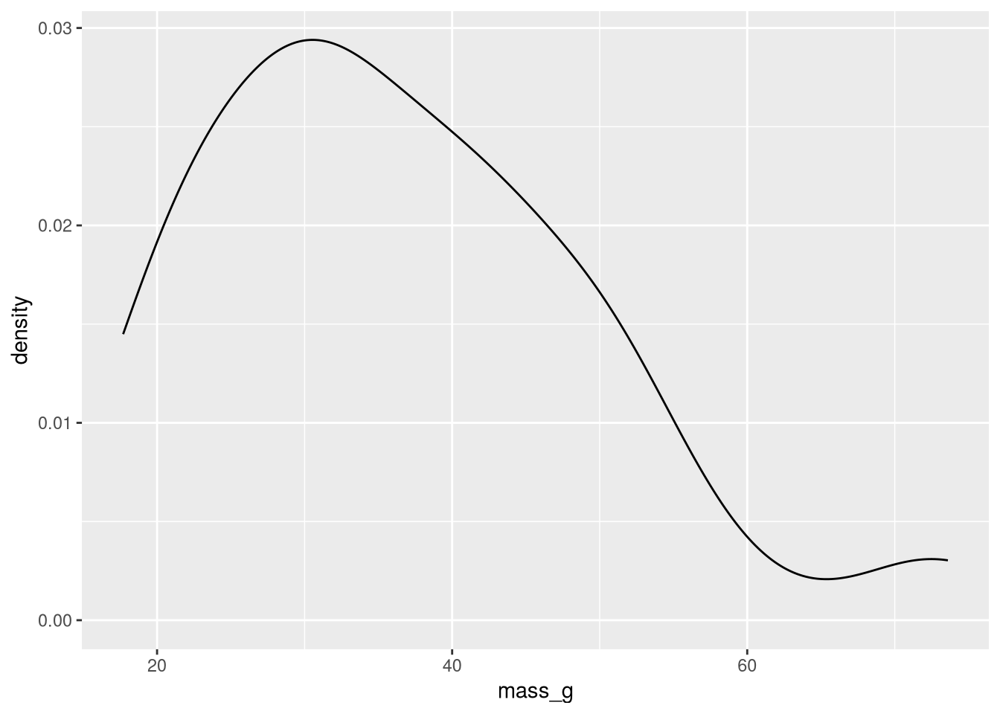
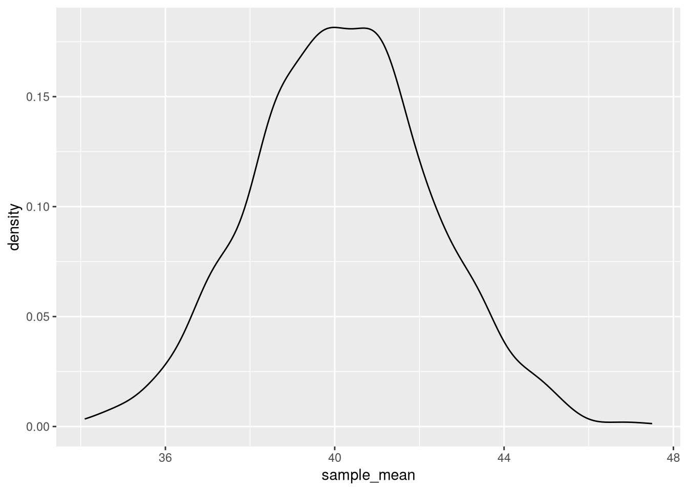
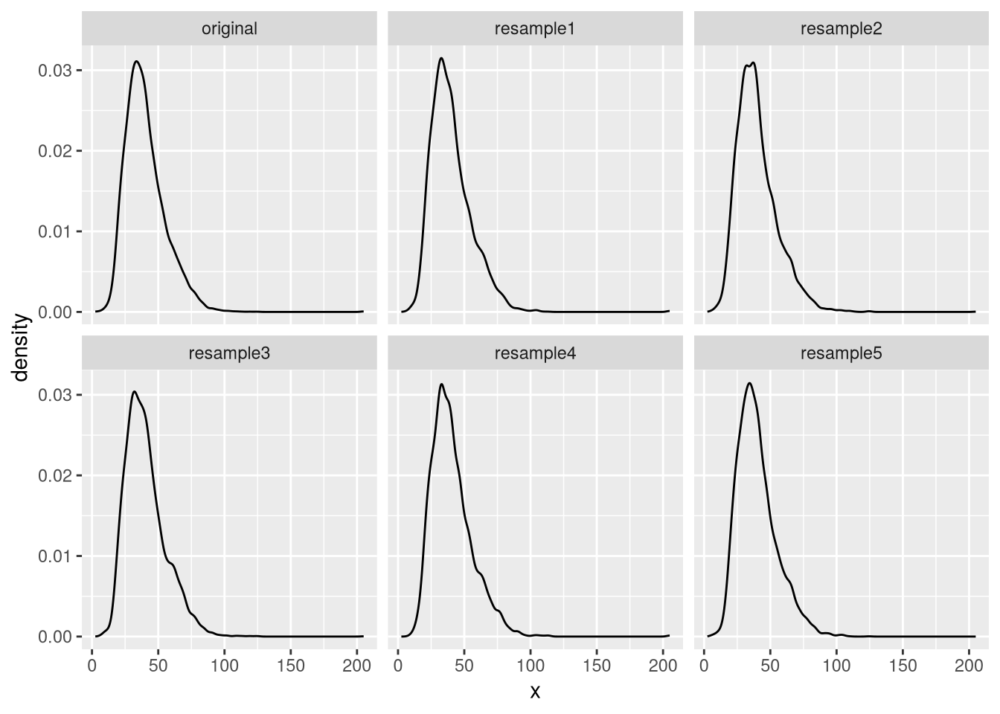
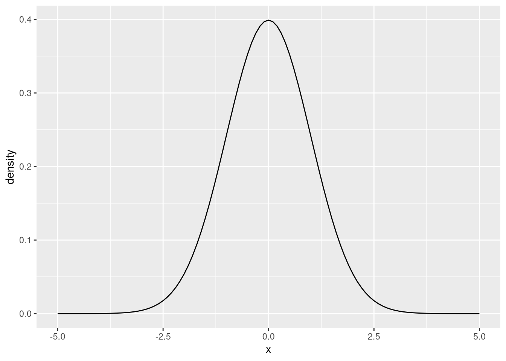
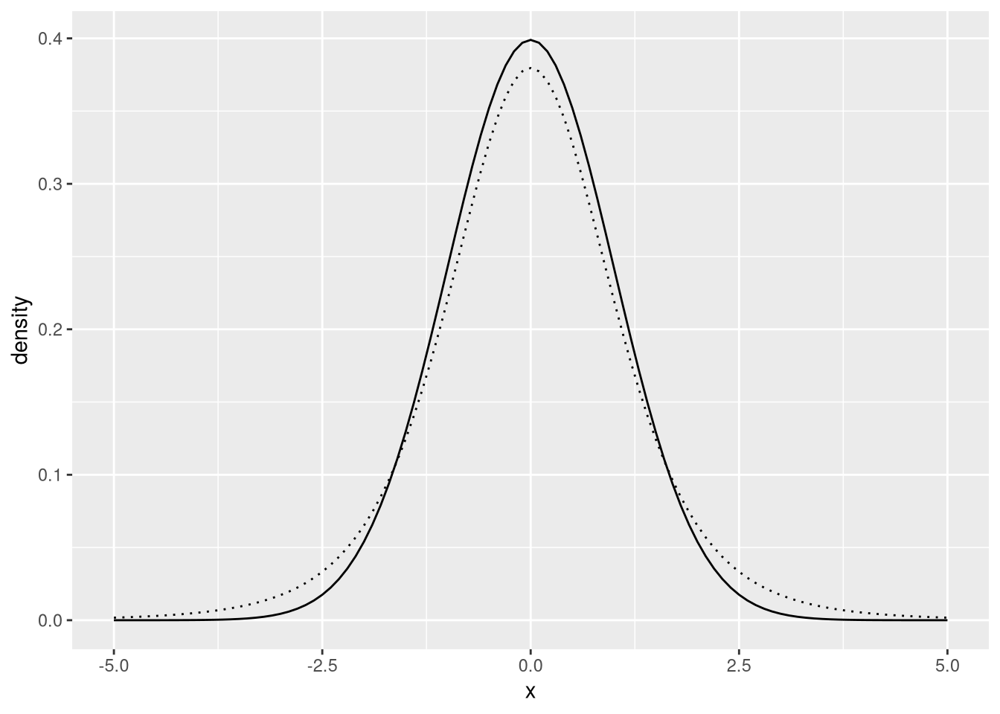

Explain the difference between a population distribution, an empirical distribution, and a sampling distribution
Explain why we use standard deviation and other measures of scale to measure uncertainty
Use the bootstrap to estimate the sampling distribution of an estimator
Explain what a confidence interval is
Use the bootstrap to compute a confidence interval for an estimate
Explain what the Central Limit Theorem is and why we can use it to construct confidence intervals
ImportantRequired Packages
This chapter uses the following R packages:
dplyr
ggplot2
purrr
For a refresher about how to install and load packages, see the Packages section of DataLab’s R Basics workshop reader.
Chapter 3 introduced three estimators for the location or center of a distribution: the mode, median, and mean. These aren’t the only estimators. In fact, for any estimation problem we face, we can invent as many estimators as we want. Most of the time, we can rule out a lot of estimators that obviously won’t work well (such as estimating location with the number 8, regardless of the data). For the remaining estimators, we need a way to decide how well they work and how much confidence to place in their estimates. Even if we know which estimator we want to use, these details are critical to how we should interpret and communicate the estimates.
This chapter introduces a versatile strategy for evaluating estimators (whether they estimate location or something else). It also briefly explains a second strategy that was developed before computers became widely available, which is still the most-used strategy today.
7.1 Dataset: CA Market Squid
The market squid is a small squid that lives along the west coast of North America. In California, there are multiple fisheries for market squid. From 1989 to 1994, the California Department of Fish and Wildlife (CDFW) collected mass, length, sex, and maturity measurements for samples of caught squid in order to study the effects of fishing on squid size and reproduction.
The CDFW publishes most of the data it collects to the California Open Data Portal. The examples in this and subsequent chapters use a cleaned 1989-1994 version of the California market squid dataset.
Important
Click here to download the 1989-1994 California market squid dataset.
If you haven’t already, we recommend you create a directory for this workshop. In your workshop directory, create a data/ subdirectory. Download and save the dataset in the data/ subdirectory.
NoteDocumentation for 1989-1994 California Market Squid Dataset
Each row in the dataset contains measurements from one squid.
Column
Description
sample_id
Identifier for the sample
date
When sample was taken
gear
Fishing gear used to catch the squid
location
Description of where sample was taken
cdfw_block
CDFW fishing block number
port
Nearest port city (always Monterey)
sets
Identifier for the school of squid
squid_number
Identifier for the squid (within each sample)
mass_g
Mass in grams (to nearest 0.1 g)
dorsal_mantle_length_mm
Dorsal mantle length in millimeters
sex
Sex
maturity
Maturity category (immature, mature, or spent)
The messy source dataset is available here. It includes a CDFW report by Robert Leos which explains the sampling procedure and analyzes the dataset.
The dataset is in RDS format, so we can load it into R with the readRDS function:
Warning: Removed 1 row containing non-finite outside the scale range
(`stat_density()`).
Warning: Removed 1 row containing missing values or values outside the scale range
(`geom_rug()`).

Figure 7.1: A density plot of mass in grams for the California market squid dataset.
Market squid typically have body masses around 40 grams. A market squid with body mass over ten times that (400 grams) would be extremely unusual. These observations are probably erroneous. We could contact CDFW to try to learn more, but for now we’ll just exclude them from the dataset. We’ll also exclude observations where mass is missing:
After removing the outliers and missing values, we’re left with 6,197 squid. There are still a few unusually large squid, but most of them are around 40 grams:
Figure 7.2: A density plot of mass in grams for the California market squid dataset, after removing outliers.
The sample mean is:
mean(squid$mass_g)
[1] 40.26416
This makes sense given the typical mass of a market squid.
7.2 Sampling Variation
We conduct data analysis to learn or answer questions about some population of interest. In many cases, we can’t collect data for the entire population because doing so would be unethical (for instance, when testing a new, unproven medicine) or because the cost (in time, money, etc.) is prohibitive. Instead, we collect a sample from the population (Section 1.1.2), compute estimates to answer our questions, and hope that the results for the sample generalize to the population.
Sampling variation is one of two sources of estimator error. When a sample is collected randomly, it might be missing important parts of the population, which makes estimates worse. Even samples that represent the population well will yield different estimates from one to the next.
To get a better understanding of sampling variation, let’s pretend that the CA market squid dataset is the entire population we want to study. In reality, the dataset is just a sample of squid caught along the west coast, but we’ll ignore this for the moment.
Suppose we take a sample of 50 squid from the population. We can do this in R with the built-in sample function or dplyr’s slice_sample function. The code to collect the sample is:
set.seed(1215)sample1 =slice_sample(squid, n =50)
Let’s examine the distribution of the sample. First, we’ll look at a summary:
summary(sample1$mass_g)
Min. 1st Qu. Median Mean 3rd Qu. Max.
17.70 27.32 34.45 36.46 44.08 73.60
Notice that the sample mean is different from the population mean (40.26). To get a better sense of how the data are distributed, we can also make a density plot:
ggplot(sample1) +aes(x = mass_g) +geom_density()

Figure 7.3: Density plot of the empirical distribution of the first sample (50 observations).
Remember that we’re pretending the California market squid dataset is our entire population of interest. We collected the sample randomly from that population. So the distribution in Figure 7.3 is an estimate of the population distribution in Figure 7.2. We call this estimate an empirical distribution because it’s based on our empirical knowledge (a sample).
For this sample, the empirical distribution is quite a bit different from the population distribution. Like a sample mean estimates a population mean, an emprical distribution estimates a population distribution. The population distribution might have longer tails, or be more symmetrical, or have some other characteristic that’s underrepresented in the dataset. We turn to the empirical distribution because it’s the best we can do with the sample we have.
Now suppose our colleagues decide to collect two more samples of 50 squid each, to compare the results:
sample2 =slice_sample(squid, n =50)sample3 =slice_sample(squid, n =50)
For sample 2, the statistics are:
summary(sample2$mass_g)
Min. 1st Qu. Median Mean 3rd Qu. Max.
15.60 33.45 38.80 40.56 47.90 83.20
And for sample 3, the statistics are:
summary(sample3$mass_g)
Min. 1st Qu. Median Mean 3rd Qu. Max.
8.10 28.82 36.90 41.77 57.25 83.60
The sample mean varies from one sample to the next, because each sample consists of different members of the population. If we continued to take samples, we’d end up with many different sample means, all estimates of the same population mean.
7.2.1 The Sampling Distribution
Now let’s change our perspective to thinking about the sample means themselves as a dataset. This dataset tells us about the characteristics and distribution of the sample mean as an estimator. We call the distribution of an estimator a sampling distribution, because it describes how the estimates are distributed across samples.
We can use a density plot to visualize the distribution of the sample means. For 1,000 sample means from 1,000 samples, it looks like this:

Figure 7.4: Density plot of the sampling distribution of the mean, based on 1,000 estimates.
Notice that the sampling distribution in Figure 7.4 is different from the population distribution (Figure 7.2). It’s still centered on the population mean (40.26), but it’s less spread out (every sample mean is within about 6 grams of the population mean) and it’s more symmetrical.
The sampling distribution is also different from any given empirical distribution (such as Figure 7.3) since they estimate the population distribution.
Important
An estimator’s sampling distribution will usually be different from the population distribution (and any empirical distributions).
The scale (Section 3.4) of a distribution measures uncertainty about what the value of an individual observation will be. When the scale is large, many values are possible, so uncertainty is high. When the scale is small, only a few values are possible, so uncertainty is low. In the extreme case, when the scale is as small as it can be, the distribution is no longer random: it’s a single, constant value that we know every observation will take.
By the same reasoning, the scale of a sampling distribution measures uncertainty about the estimates. When the scale is large, estimates will vary a lot from sample to sample, so we might not trust any single estimate. When the scale is small, the estimates tend to agree regardless of the sample, so we can be more certain. In other words, we can judge how confident to be about an estimator based on the scale of its sampling distribution.
For the sample means summarized by Figure 7.4, the sample standard deviation is about 2.11. The standard deviation of an estimator is called its standard error, because it helps us judge how uncertain to be about the estimates. In other words, it informs us about how much error there might be in the estimates due to random variation between samples. The larger the standard error is, the more uncertain we are about the estimate.
7.3 Bias
Sampling variation is only one of the two sources of estimator error. The other is statistical bias, where an estimator estimates the wrong quantity. Notice that this definition of bias is much narrower and more specific than the definition of bias in ordinary speech and writing.
We say an estimator is unbiased if it estimates the correct quantity on average. This is the same as the sampling distribution being centered on the correct quantity.
Minimizing standard error is often at odds with minimizing bias. For instance, we can always come up with a biased estimator with lower standard error than even the best unbiased estimator. We call this tension the bias-variance tradeoff (variance is the squared standard error). Whether or not it’s appropriate to accept some bias to reduce standard error depends on the specific estimation problem.
NoteNote: Consistency
Consistency is another important statistical property. We say an estimator is consistent if the estimates get closer to being correct as the sample size increases.
An unbiased estimator is consistent if its standard error decreases as the sample size increases. Biased estimators can also be consistent.
7.4 The Bootstrap Algorithm
Most of the time, we only have one sample. And if we had more than one sample, we’d combine them into a single sample, since more observations generally lead to more accurate estimates. So if we want to evaluate an estimator, we need a way to estimate its sampling distribution with only one sample.
The bootstrap, or bootstrap algorithm, is one such method. The main idea is to draw new samples from the dataset (which is itself a sample) rather than the population. Assuming the dataset is representative of the population, these new bootstrap resamples should have similar characteristics to a sample from the population. The bootstrap resamples must be drawn with replacement. Another way to think about this is that we’re using the known empirical distribution as a substitute for the unknown population distribution.
Once we have several bootstrap resamples, we can compute an estimate on each one. This gives us a collection of bootstrap estimates. By treating the bootstrap estimates as a dataset in their own right, we can analyze the bootstrap sampling distribution of the estimator and use it to estimate statistics such as standard error.
NoteAlgorithm: The Bootstrap
Suppose we have a sample and want to know more about a particular estimator’s sampling distribution. To use the bootstrap algorithm:
Construct a new sample of the same size by sampling with replacement. This is a bootstrap resample.
Compute an estimate on the bootstrap resample. This is a bootstrap estimate.
Repeat steps 1-2 to compute a collection of \(b\) resamples and \(b\) estimates.
Use the bootstrap estimates to estimate standard error or other properties of the sampling distribution.
Use \(b \geq 10,000\) resamples. Larger values of \(b\) lead to better approximation of the sampling distribution, but also increase computing time.
A bootstrap sampling distribution is a useful but imperfect estimate of the sampling distribution. Unlike the sampling distribution, it’s centered on the estimate for the original dataset. On the other hand, the scale is about the same as in the sampling distribution, so we can use it to estimate standard error.
Let’s apply the bootstrap to the California market squid dataset. We’ll stop pretending that the dataset is the population. Instead, we’ll treat the dataset as a sample (because it is), and we’ll try to estimate the distribution of the sample mean.
To make resampling easier, we’ll extract the mass_g column as a variable. Then we can use R’s sample function to generate a bootstrap resample. We need to set replace = TRUE to make the function sample with replacement. The function samples the same number of observations by default:
Figure 7.5: Density plot of the first bootstrap resample.
Figure 7.2 shows the distribution of the original dataset, while Figure 7.5 shows the distribution of the bootstrap resample. The two distributions are nearly identical, which is typical for large samples. Nevertheless, the sample mean is slightly different from the population mean (40.26):
mean(boot)
[1] 40.37468
We can use R’s apply functions or the purrr package’s map functions to repeat the resampling step many times. We’ll compute \(b = 1,000\) resamples to keep the computing time manageable, but in practice \(b \geq 10,000\) is more appropriate:
Each of the bootstrap resamples is slightly different. To demonstrate this, here are density plots for several, as well as the density plot for the original sample:
slice =1:5df =data.frame(x =c(mass_g, unlist(boot_resamples[slice])),# Make a categorical feature to identify each resample.sample =rep(c("original", paste0("resample", slice)),each =length(mass_g) ))ggplot(df) +aes(x = x) +geom_density() +facet_wrap(vars(sample))

Figure 7.6: Density plot of five bootstrap resamples, as well as the original sample.
The next step is to compute an estimate, in this case the sample mean, on each of the bootstrap resamples. Again we can use the purrr package for this:
boot_means =map_dbl(boot_resamples, mean)
With the bootstrap estimates, we can make a density plot:
Figure 7.7: Density plot of 1,000 bootstrap sample means. This distribution approximates the sampling distribution of the mean.
Two details of Figure 7.7 are important to notice. First, the distribution is centered at roughly 40.26, the mean of the original sample. For an unbiased estimator, the bootstrap sampling distribution is always centered on the original estimate.
Warning
Remember that the bootstrap sampling distribution is itself an estimate and its center is usually different from the actual sampling distribution.
Fortunately, the scale of the bootstrap sampling distribution tends to be similar to the actual sampling distribution. So we can still use it to estimate standard error.
Second, notice that the spread of the bootstrap sampling distribution is much smaller than the spread of the sampling distribution in Figure 7.4. In fact, the standard deviation of the bootstrap estimates is:
sd(boot_means)
[1] 0.1948083
This is about 1/10th of the standard error (2.11) we found in Section 7.2.1. The reason for this difference is that now each sample has 6197 observations instead of 50 observations, so the estimates of the mean are much more accurate.
The takeaway is that the bootstrap sampling distribution is useful for estimating standard error, even though its center (and sometimes its shape) can differ from the actual sampling distribution.
Warning
The bootstrap is known to perform poorly in a few specific situations:
When the size \(n\) of the original sample is small (say \(n < 30\)). In this case, the methods in Section 7.6 are usually a better choice.
When the original sample is a poor representative of the population. This is a difficult case, because the best solution is to collect more and better data.
When the estimator is designed to estimate an extreme value, such as the population minimum or maximum. In this case, there are often sophisticated methods tailored specifically to the estimator that perform better.
7.5 Bootstrap Percentile Intervals
We can account for uncertainty about an estimate by instead presenting an interval of estimates. We call this a confidence interval. The interval should be narrow when we’re relatively confident (small standard error) and wide when we’re uncertain (large standard error). Çetinkaya-Rundel and Hardin (2024) explain confidence intervals with a helpful analogy: a single estimate is like fishing with a spear, whereas a confidence interval is like fishing with a net. With the confidence interval, we have a better chance of estimating correctly.
There are many ways to construct confidence intervals for an estimate. A relatively simple way is to use percentiles of the bootstrap sampling distribution. This is called a bootstrap percentile interval. For example, if we take the 2.5th and 97.5th percentiles of the bootstrap means, we get:
quantile(boot_means, c(0.025, 0.975))
2.5% 97.5%
39.87449 40.63477
We estimate that the population mean is somewhere in this interval, although as with any estimate, this might be wrong. We call this a 95% bootstrap percentile interval because it covers the central 95% of the bootstrap sampling distribution. For reasons beyond the scope of this reader, there’s also a 95% chance that the interval covers the population mean.
Warning
In situations where the bootstap performs poorly (see Section 7.4), the bootstrap percentile intervals will usually be too narrow. In other words, they tend to understate uncertainty and have less than a 95% chance of covering the population parameter.
To learn more about the bootstrap, including other ways to bootstrap and to use the bootstrap to construct confidence intervals, see Bootstrap Methods and Their Application(Davison and Hinkley 1997).
In R, the boot package provides functions to carry out a bootstrap and compute confidence intervals.
The infer package provides functions for many methods in applied statistics, with an interface inspired by and compatible with the Tidyverse. The bootstrap is among the methods the package supports.
7.6 The Central Limit Theorem
The bootstrap is only possible because modern computers can resample a dataset in a few seconds, but statisticians have needed to quantify uncertainty since long before computers were invented. To do this, they developed mathematical models of distributions and formulas for computing confidence intervals. These methods are still widely used. Compared to the bootstrap, they have different strengths and weaknesses, so it’s useful to be familiar with both.
Before we can compute confidence intervals, we need to define some statistical concepts. A random variable is an unrealized number or category that will be drawn randomly from a specific distribution. Think of a random variable as an observation that hasn’t been collected yet. We might know how the population is distributed, but we don’t know the value of the observation. The statistical convention is to write random variables in uppercase, like \(X\) or \(Y\), and non-random values in lowercase, like \(x\) and \(y\).
The normal distribution is the centerpiece of many classical methods. Its density curve is bell-shaped and extends to infinity in both the negative and positive directions:

Figure 7.8: Density plot of the standard normal distribution. The mean is 0 and the standard deviation is 1.
The normal distribution is really a family of distributions parameterized by their mean \(\mu\) and variance \(\sigma^2\). We denote these by \(\mathcal{N}(\mu,
\sigma^2)\). All of them have the characteristic bell-shaped density. We call the normal distribution with mean 0 and variance 1, denoted \(\mathcal{N}(0,
1)\), the standard normal distribution.
Normal distributions are common because sums of random variables tend to be nearly normal, especially if the number of terms in the sum is large. The sample mean is an example of this. Suppose \(X_1, X_2, \dots, X_n\) are identically distributed random variables from a population with mean \(\mu\) and standard deviation \(\sigma\). Suppose also that the value of each one is drawn independently of the others. Then the sample mean \(\bar{X}\), which estimates the population mean \(\mu\), is unbiased: its mean is \(\mu\). Its standard error is:
\[
\textrm{SE} = \frac{\sigma}{\sqrt{n}}.
\]
As the number of observations \(n\) increases, the distribution of \(\bar{X}\) becomes closer and closer to a normal distribution. Specifically,
\[
\bar{X} \to \mathcal{N}\left(\mu, \frac{\sigma^2}{n}\right)
\quad as \quad
n \to \infty.
\]
This result is known as the Central Limit Theorem (CLT) and is one of the foundations of statistics. The CLT is important because it tells us that for large samples, the sampling distribution of the mean is approximately normal. We can use this to compute confidence intervals.
We can rearrange the CLT mathematically to write it in terms of a standard normal distribution:
\[
\frac{\bar{X} - \mu} {\sigma / \sqrt{n}} \to \mathcal{N} (0, 1)
\quad as \quad
n \to \infty.
\]
Notice that the left-hand side is just the standard score (Section 4.3) of the sample mean.
Note
There are other versions of the CLT that remove some of the assumptions. The most important assumptions are that the random variables are independent and that their standard deviations are finite.
Most of the time, we don’t know the population standard deviation \(\sigma\). We can replace it with the sample standard deviation \(S\) to estimate the standard error of the sample mean:
For large samples (say \(n \geq 30\)), we can also replace \(\sigma\) with \(S\) in the CLT. For small samples, \(S\) tends to underestimate, so the standard score is larger and doesn’t have a standard normal distribution. The density is still bell-shaped, but the tails are notably heavier. We call this Student’s t distribution (or the t distribution).

Figure 7.9: Density plot of the standard normal distribution (solid) and Student’s t distribution with 5 degrees of freedom (dotted).
Like the normal distribution, Student’s t distribution is really a family of distributions. The t distribution has just one parameter: normality, a positive integer that controls how heavy the tails are. As normality increases, the tails become lighter, and the t distribution becomes more and more like a standard normal distribution. We denote the t distribution by by \(t_v\), where \(v\) is normality. The normality parameter is also called degrees of freedom.
After replacing \(\sigma\) with \(S\), the distribution of the standard score of the sample mean is approximately a t distribution with normality \(n - 1\). In mathematical notation:
The symbol \(\adist\) means “is approximately distributed as.” The distribution is exact if \(X_1, X_2, \dots, X_n\) are normally distributed.
The distribution of the sample mean (and of its standard score) matters because we can use it to construct a confidence interval. Specifically, because we know the distribution, we can find a quantile \(q\) that bounds the standard score on both sides with probability \(1 - \alpha\). That is,
The endpoints of this inequality are random; the population mean \(\mu\) is non-random. To make this \(1 - \alpha\) confidence interval concrete, we replace the random values with their estimates:
In this case, \(q\) is the \(1 - \alpha / 2\) quantile of \(t_{n - 1}\).
In R, the qt function computes quantiles of the t distribution. So the code to construct a 95% confidence interval for mass in the California market squid example is:
n =length(squid$mass_g)std_err =sd(squid$mass_g) /sqrt(n)# For a 0.95 = 1 - 0.05 confidence interval.ci =mean(squid$mass_g) +qt(c(0.025, 0.975), n -1) * std_errround(ci, 2)
[1] 39.89 40.64
This t distribution confidence interval almost identical to the bootstrap percentile interval (39.87, 40.63).
Compared to bootstrap percentile intervals, t distribution confidence intervals have several advantages. They’re cheaper to compute since no resampling is needed. They also work relatively well even when the sample size is small.
The main limitation of t distribution confidence intervals is that they’re exclusively for the sample mean. The sampling distribution of a different statistic will not necessarily be a t distribution. There are some methods to generalize the CLT to other statistics, but the bootstrap is more flexible overall.
Tip
Knowing several different ways to compute confidence intervals (or any other estimate) is a great way to check work. Compute them both ways and check whether they agree. If they don’t, go back and look for mistakes in the computations.
OpenIntro Statistics(Diez et al. 2019) is an introductory statistics textbook that exclusively uses classical methods based on the CLT. It provides a more detailed look at these methods without letting rigor get in the way of intuition.
Arel-Bundock, Vincent. 2025. Model to Meaning: How to Interpret Statistical Models with R and Python. CRC Press LLC. https://marginaleffects.com/.
Carroll, Stephanie Russo, Ibrahim Garba, Oscar L. Figueroa-Rodríguez, et al. 2020. “The CARE Principles for Indigenous Data Governance.”Data Science Journal 19 (1). https://doi.org/10.5334/dsj-2020-043.
Hesterberg, Tim. 2014. What Teachers Should Know about the Bootstrap: Resampling in the Undergraduate Statistics Curriculum. arXiv:1411.5279. arXiv. https://doi.org/10.48550/arXiv.1411.5279.
Kuhn, Max, and Kjell Johnson. 2020. Feature Engineering and Selection: A Practical Approach for Predictive Models. CRC Press, Taylor & Francis Group. https://feat.engineering/.
Matejka, Justin, and George Fitzmaurice. 2017. “Same Stats, Different Graphs: Generating Datasets with Varied Appearance and Identical Statistics Through Simulated Annealing.”Proceedings of the 2017 CHI Conference on Human Factors in Computing Systems (New York, NY, USA), CHI ’17, May 2, 1290–94. https://doi.org/10.1145/3025453.3025912.
The Turing Way Community. 2025. The Turing Way: A Handbook for Reproducible, Ethical and Collaborative Research. V. 1.2.3. Zenodo, released April. https://doi.org/10.5281/zenodo.15213042.